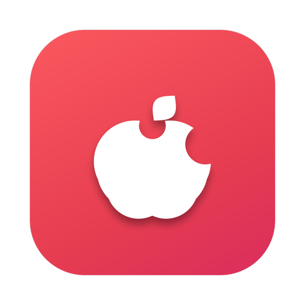

Local play
A native app per game, launched from your library. Direct execution of the game's own code, with no interpreter and no JIT at run time.
Napple takes the games you own and recompiles them, ahead of time, into a real macOS app with a Metal renderer. No emulator, no JIT, no account. Everything happens on your Mac and stays there.
Apple Silicon Mac, macOS 26 or later. You bring your own dumps and keys; Napple ships no games, no keys and no firmware.

How it works
The Switch and every Apple Silicon Mac run ARM64. Napple keeps the game's own machine code and rewrites, once, only what macOS does not allow. The runtime then answers the console's system calls and translates its graphics API to Metal.
Open Napple Studio, add your own prod.keys once, and drop your dump on the window: XCI, NSP, NSZ or XCZ, with updates and DLC merged in.
Studio decrypts, analyses and recompiles ahead of time, then packages a standalone, locally signed .app. Progress and a live log are right there.
Launch it from the library. Plug in a controller, open the in-game overlay with F1 and tune the picture, speed and controls to taste.
Features
Everything below runs locally on your Mac. Per-title results vary while Napple is in beta; see compatibility for what has been tried.
A native app per game, launched from your library. Direct execution of the game's own code, with no interpreter and no JIT at run time.
Play a game's own local multiplayer on one Mac with several controllers, or over your local network with friends in the same room. No internet needed.
The console's NVN graphics API and its Maxwell shaders are translated to Metal, with a pipeline cache on disk so the second run is smoother.
Render scale above native, supersampling and an upscaler choice (MetalFX spatial where available, edge-adaptive or CAS). Unlocked frame rates are done per title so game speed does not change.
Game controllers with rumble, plus keyboard and mouse. Virtual amiibo and an IR camera through your webcam, and Mii data, are available where a game uses them.
Install community .napmod files: patches, cheats, replacement files and per-title settings. Mods are never downloaded for you, and code patches stay off until you turn them on.
Saves live in ~/Library/Application Support/Napple, in plain folders you can back up, copy or delete yourself. There is no cloud and no sync.
Press F1 (or the controller's Home button) in any running game. Everything is changed live, and per game.
Privacy
Napple has no accounts, no servers of its own, no cloud saves, no friends list and no telemetry. There is nothing to sign in to and nothing to opt out of.
The network is used only when you ask for it: LAN play with people on your own network, downloading a release from GitHub, or fetching the optional public amiibo list. Read the full privacy notice.
Compatibility
Napple targets the Switch platform, not a list of titles, and it is still a beta. These are the games the developers test on their own Macs, per stage. Stages that say partial or untested are exactly that.
%Analysis snapshot 2026-11-02, commit 2da952e. An estimate of how much of the Switch platform surface the pipeline and runtime implement, not a per-game compatibility score.
Coverage is not compatibility. The long tail of service commands, shader corner cases and GPU behaviour is what real games trip over first.
Get started
Every build is published on GitHub. Needs an Apple Silicon Mac on macOS 26 or later.
prod.keys (and firmware for the system fonts) once.Prefer a terminal? The napple CLI does every stage:
napple build game.xci update.nsp -k prod.keys --firmware firmware.zip -o ~/AppsSee the documentation for the CLI, mods, and the architecture.
Beta builds are signed ad hoc unless the maintainers have notarisation set up. Right-click the app and choose Open, or run once:
xattr -dr com.apple.quarantine /Applications/NappleStudio.appGames you build are signed locally on your Mac, for you.
FAQ
Napple includes no games, no keys, no firmware and no Nintendo code, and it never downloads any. You must own the console and the games and supply your own legitimately dumped files. Do not use it for piracy, and do not share the apps it builds: they contain content derived from your copy. Napple is not affiliated with Nintendo.
No. Napple is a toolchain. The game's own ARM64 code is rewritten ahead of time and runs directly on your CPU, with no interpreter and no JIT. The runtime re-implements the console's system services and translates its graphics to Metal.
No. Online play and accounts are not part of Napple, and it does not connect to any console service. What works is local: one Mac with several controllers, and LAN play between Macs on the same network, in games that offer those modes.
On your disk, in ~/Library/Application Support/Napple, one folder per title. Nothing is uploaded and there is no cloud sync, so back them up like any other files.
It varies by game and is changing fast. The compatibility page lists each tested game and its status per stage, including what is partial or not yet tried. It is reported by the developers on their own Macs, not guaranteed.
iOS and iPadOS builds are in development and not part of this beta release. The Mac comes first.
Open an issue on GitHub (see how to report). Never attach game files, keys or firmware.